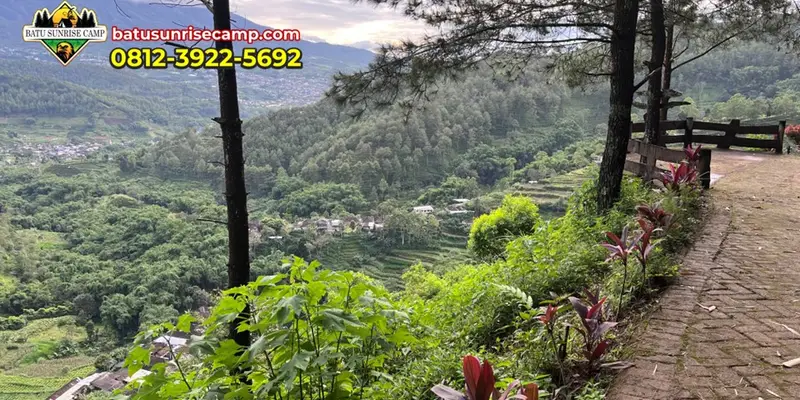

Camping dan glamping di Malang Dreamland menawarkan pengalaman menginap di perbukitan dengan fasilitas yang bervariasi, mulai dari tenda sederhana hingga cabin dengan kenyamanan lebih lengkap.
Ringkasan Inti
- Malang Dreamland menyediakan dua opsi menginap, yaitu camping ground dan glamping atau cabin.
- Fasilitas camping umumnya sudah termasuk peralatan dasar sehingga pengunjung tidak perlu membawa tenda sendiri.
- Glamping menawarkan kenyamanan lebih dengan fasilitas yang lebih lengkap dibandingkan camping biasa.
- Suhu udara pada malam hari di kawasan ini cenderung dingin karena berada di dataran tinggi.
- Reservasi lebih awal disarankan terutama saat akhir pekan atau musim liburan.
Apa Saja Fasilitas Camping di Malang Dreamland?
Fasilitas camping di Malang Dreamland umumnya mencakup area lapang untuk mendirikan tenda, peralatan dasar berkemah, serta akses ke fasilitas umum seperti toilet dan area istirahat.
Bagi pengunjung yang tidak membawa peralatan sendiri, pengelola biasanya menyediakan paket penyewaan yang sudah mencakup tenda dan perlengkapan tidur dasar. Hal ini memudahkan wisatawan yang ingin merasakan pengalaman berkemah tanpa harus repot membawa peralatan dari rumah.
Selain itu, area camping ground di kawasan ini biasanya dilengkapi dengan pemandangan perbukitan terbuka, sehingga pengunjung dapat menikmati suasana matahari terbit maupun terbenam langsung dari tenda mereka.
Apa Perbedaan Camping dan Glamping di Malang Dreamland?
Perbedaan utama camping dan glamping di Malang Dreamland terletak pada tingkat kenyamanan fasilitas, di mana glamping menawarkan fasilitas yang lebih lengkap menyerupai kamar hotel dalam bentuk tenda atau cabin.
Camping biasa cenderung mengandalkan peralatan dasar dan cocok bagi wisatawan yang mencari pengalaman berkemah yang lebih otentik dan terjangkau. Sementara itu, glamping atau cabin dirancang bagi pengunjung yang tetap ingin merasakan suasana alam terbuka namun dengan fasilitas tambahan seperti alas tidur yang lebih nyaman, penerangan yang lebih baik, dan terkadang akses listrik.
Pilihan antara camping dan glamping biasanya disesuaikan dengan anggaran, jumlah rombongan, serta tingkat kenyamanan yang diinginkan selama menginap.

Pemandangan area camping ground dan cabin glamping yang asri di dataran tinggi Malang Dreamland.
Apa yang Perlu Disiapkan Sebelum Camping di Malang Dreamland?
Persiapan yang perlu dilakukan meliputi pakaian hangat, alas kaki yang nyaman, serta perlengkapan pribadi karena suhu di kawasan ini cenderung dingin pada malam hari.
Karena lokasi berada di dataran tinggi, suhu udara pada malam dan dini hari dapat turun cukup signifikan dibandingkan siang hari. Membawa jaket tebal, sarung tangan, atau pakaian berlapis sangat disarankan agar tetap nyaman selama bermalam.
Selain itu, sebaiknya wisatawan menyiapkan senter tambahan, power bank, serta obat-obatan pribadi mengingat fasilitas penerangan dan akses ke fasilitas kesehatan di kawasan wisata alam biasanya lebih terbatas dibandingkan di perkotaan.
Kapan Waktu Terbaik untuk Camping atau Glamping di Malang Dreamland?
Waktu terbaik untuk camping atau glamping di Malang Dreamland umumnya adalah pada musim kemarau agar cuaca lebih stabil dan risiko hujan lebih rendah.
Pada musim kemarau, langit cenderung lebih cerah sehingga peluang menikmati pemandangan matahari terbit dan terbenam menjadi lebih besar. Sebaliknya, pada musim hujan, kawasan pegunungan lebih rentan terhadap kabut tebal dan hujan mendadak yang dapat mengganggu kenyamanan berkemah.
Bagi yang ingin menghindari keramaian, memilih hari kerja untuk camping atau glamping juga dapat menjadi pertimbangan, mengingat akhir pekan dan musim liburan biasanya lebih padat pengunjung.
Camping dan glamping di Malang Dreamland menawarkan dua pilihan pengalaman menginap sesuai kebutuhan dan anggaran, dari berkemah sederhana hingga glamping dengan fasilitas lebih lengkap. Pastikan membawa pakaian hangat, melakukan reservasi lebih awal, dan memilih musim kemarau untuk pengalaman yang lebih nyaman.
FAQ
Tidak selalu, karena pengelola umumnya menyediakan paket penyewaan tenda dan perlengkapan dasar bagi pengunjung yang tidak membawa peralatan sendiri.
Glamping menawarkan fasilitas yang lebih lengkap dan nyaman dibandingkan camping biasa, menyerupai fasilitas kamar dalam bentuk tenda atau cabin.
Disarankan melakukan reservasi terlebih dahulu, terutama saat akhir pekan atau musim liburan, mengingat kapasitas area menginap yang terbatas.